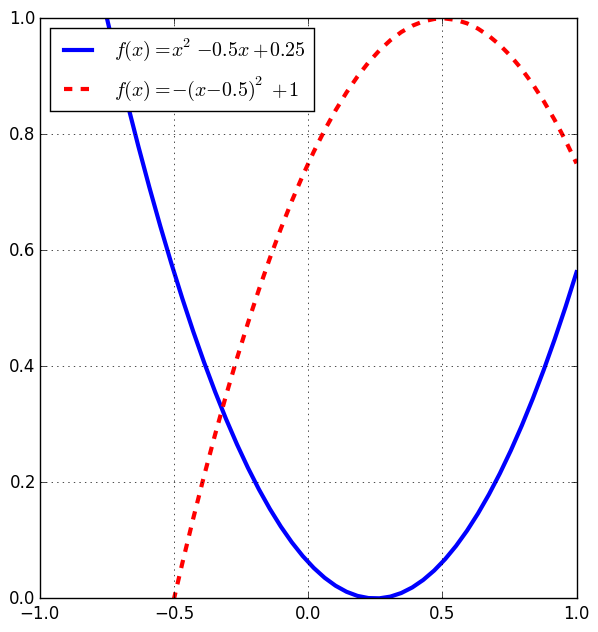
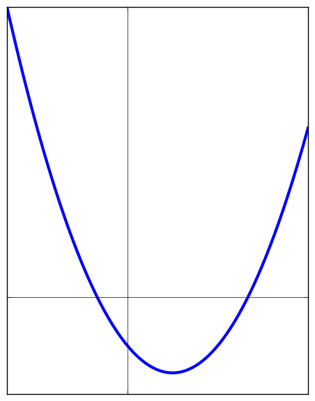

| up | 3.2 » |
3.1 — Quadratic Functions

Properties
| Standard Form | Vertex Form | |
|---|---|---|
| Functional Form: | $f(x) = ax^2 + bx + c$ | $f(x) = a(x-h)^2 + k$ |
| Vertex: | $\left(-\frac{b}{2a}, f( -\frac{b}{2a} )\right)$ | $(h,k)$ |
| Axis of Symmetry: | $x=-\frac{b}{2a}$ | $x=h$ |
| Opens up: | when $a \gt 0$ | when $a \gt 0$ |
| Opens down: | when $a \lt 0$ | when $a \lt 0$ |
| $y$-intercept (set $x=0$, solve for $y$): |
$(0, c)$ | $\left(0, ah^2 + k\right)$ |
| $x$-intercepts (roots) (set $y=0$, solve for $x$): |
$\left(\frac{-b\pm\sqrt{b^2-4ac}}{2a}, 0\right)$ | $\left(h\pm\sqrt{-\frac{k}{a}}, 0\right)$ |
Graph the function $y=-4(x-2)^2-1$. How many $x$-intercepts does the equation have?
No intercepts.
Write the equation of the parabola in terms of $x$ and $y$ with vertex at $(5,-2)$ and $y$-intercept at $3$.
$y=\frac{1}{5}(x-5)^2-2$
Completing the Square
Convert from standard form to vertex form, we use the technique of completing the square.- Factor out the coefficient on the squared term from terms involving $x$: $$f(x) = a\left(x^2 + \frac{b}{a}x\right) + c$$
- Look at the linear term in side the parenthesis (the $x$ term, not $x^2$). Divide it by 2 and square it. This gives $(\frac{b}{2a})^2$. Add and subtract this number inside the parenthesis. $$f(x) = a\left(x^2 + \frac{b}{a}x + \left(\frac{b}{2a}\right)^2 - \left(\frac{b}{2a}\right)^2 \right) + c$$
- Rewrite the first three terms inside the parenthesis by using the fact that we have a perfect square: $$f(x) = a\left(\left(x + \frac{b}{2a}\right)^2 - \left(\frac{b}{2a}\right)^2 \right) + c$$
- Distribute the constant $a$ and group the constant terms together: \begin{align*} f(x) &= a\left(x + \frac{b}{2a}\right)^2 + \left( - a\left(\frac{b}{2a}\right)^2 + c \right) \\ f(x) &= a\left(x + \frac{b}{2a}\right)^2 + \left( c - \frac{b^2}{4a} \right) \end{align*}
- You've just completed the square.
Convert $y = 2x^2 +4x+5$ to vertex form by completing the square.
$y = 2(x+1)^2 + 3$
Find the vertex and graph the equation $y = -2x^2 + 6x + 5$.
vertex $= (\frac{3}{2}, \frac{19}{2})$
Select the equation of the following graph (where $c$ is some constant):

- $y=-4x^2+3x+c$
- $y=4x^2+3x+c$
- $y=4x^2-3x+c$
- $y=-4x^2-3x+c$
3.
Minima and Maxima (Extrema)
Let $y=f(x)$ be some function defined on a some domain, $D$ (the set of $x$ values which we can plug into $f$). $D$ might be the interval $[0, \infty)$, for example. Then:- $f$ has a global maximum or absolute maximum at $x=c$ if $f(c) \geq f(x)$ for all $x$ in the domain, $D$.
- $f$ has a global minimum or absolute minimum at $x=c$ if $f(c) \leq f(x)$ for all $x$ in the domain, $D$.
- When referring to the $x$ value for extrema, we say $f$ has a maximum or minimum at $x=c$ or the min / max occurs at $x=c$.
- When referring to the $y$ value for extrema, we say $f$ has a maximum or minimum of $y=f(c)$ or $f$ has a minimum or maximum value of $y=f(c)$.
A quadratic function always has either exactly one minimum or maximum which occurs at the vertex.
The quadratic function $f(x) = x^2 + 4x + 4$ has:
- a max value of 16
- a min value of 0
- a max value of 2
- a min value of -2
2.
$f(x) = a(x-4)^2 - 2, \; a \lt 0$ has
- a max value of 2
- a max value of -2
- a min value of 4
- a max value of 4
- a min value of -2
2.
Find the value of $b$ which makes $y$ a multiple of a perfect square (this means $y=a(x-h)^2$ for some $a$ and $h$.), if $y=2x^2+8x+b$.
$b=8$